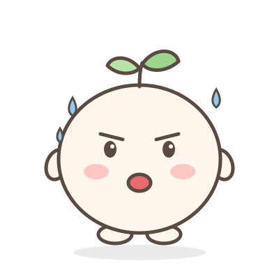
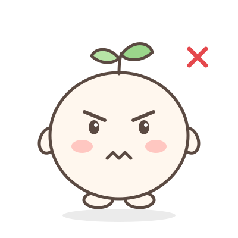
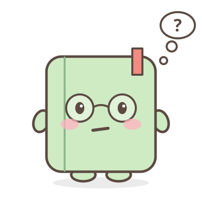
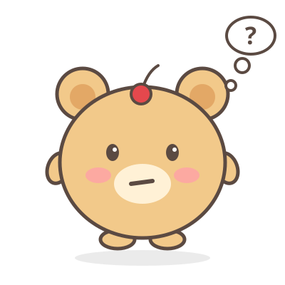
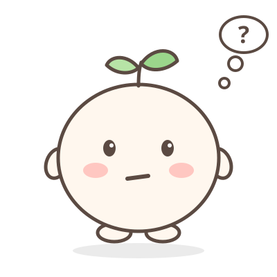
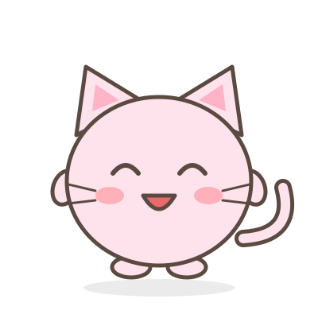
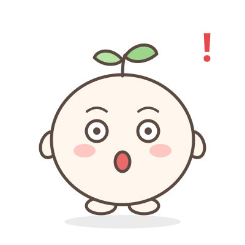
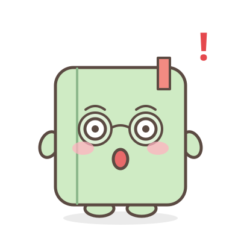
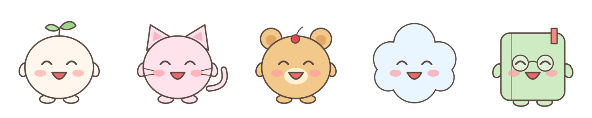

讓介面
幫你減壓
為什麼有些網站讓人好累？
一個小小的設計改變，能不能讓人少一點壓力？
← → 方向鍵或下方按鈕翻頁 · 📎 可以展開詳細數據
一篇論文吧！


你一定有過這種經驗

🚗 上網訂租車三台車、三種保險、一大堆小字……
- 「年輕駕駛附加費」到底適不適用我？
- 「超過里程每英里加收」要怎麼算？
- 「押金另計」是多少？
到底哪個划算？？
線上交易的放棄率接近
每年約造成 2,600 億美元的營收損失
（論文引用 Baymard Institute 2024）
很多人不是不想完成，而是被介面搞到放棄。
好幾次……
出處：wiki/papers/Valta2026-Technostress-Nudges · 論文 §1
這種壓力有個名字：Technostress（科技壓力）
使用資訊系統時產生的壓力。同樣是「系統很複雜」，人會有兩種不同的感受：

😣 Hindrance 阻礙型「這系統在擋我的路！」
- 資訊不清楚、導覽複雜、一次塞太多
- 可能導致倦怠、放棄任務、不想再用
「有點難，但我能學到東西。」
- 工作量大、承擔新的責任
- 可能帶來成長和正面結果
這篇研究只看「阻礙型」：因為它和負面後果的關聯最一致。
可以完全不同喔！

出處：wiki/concepts/Technostress · 論文 §2.1
過去的解法：把系統砍簡單

以前的思路介面太複雜？那就簡化、刪功能！
問題是：很多任務本來就很複雜——租車、報帳、採購、選保險，不可能全部砍掉。

這篇研究的新問題不減少複雜度，只改變「怎麼呈現」，能不能讓人壓力變小？
如果可以，那對誰最有效？
📝 研究問題：介面設計的 nudge 原則，如何影響使用者在複雜決策任務中感受到的阻礙型科技壓力？數位思維又扮演什麼角色？
出處：wiki/papers/Valta2026-Technostress-Nudges · 論文 §1
工具：Nudge（輕推）
🍎 像自助餐廳把水果放在視線高度：
不禁止任何選項、不給錢，只調整擺放方式，讓人更容易做出好選擇。
推一下喔～
先幫你勾好一個合理的選項
想換隨時可以換。
原理：少做一些決定 → 不用每個都比較
用標籤、圖示、版面讓重點跳出來
選項一個都沒少。
原理：引導注意力 → 不用在小字裡大海撈針
詳細說明
兩種 nudge 的理論機制（論文 §2.2、§3）
| Default-setting | Salience-framing | |
|---|---|---|
| 做法 | 預選一個選項，使用者可以更改 | 用視覺提示讓任務相關資訊更顯眼，不改變選項集合 |
| 機制 | choice simplification（簡化選擇） | attentional guidance（引導注意力） |
| 適用情境 | 重複、低風險的設定決策 | 資訊多、需要整合比較的任務 |
- 最有效：任務複雜、選項多、有時間壓力或需要負責的時候
- 效果較弱：任務簡單、使用者已有明確偏好，甚至可能引發反感（reactance）
- 這裡的 salience-framing 指介面上的視覺突顯，不是 gain-loss 那種文字框架效應
出處：wiki/concepts/Digital-Nudging
出處：wiki/concepts/Digital-Nudging · 論文 §2.2
每個人面對科技的「思考習慣」不一樣
研究者稱為 Digital Mindset（數位思維）：不是你會不會操作，而是你怎麼看待數位世界。它包含四種習慣：
🧩 組合思考
習慣把現成的工具拼起來解決問題
🔧 延伸思考
總在想「這東西還能拿來做什麼？」
📊 資料思考
做決定前想先蒐集一堆資料

🎲 冒險思考
願意嘗試有風險的新做法
原文：combinatorial、generative、data-driven、risk-affine thinking。研究者認為這是可以透過訓練改變的特質。
詳細說明
數位思維和相似概念的差別（論文 §2.3）
| 概念 | 捕捉的是什麼 |
|---|---|
| Digital literacy 數位素養 | 能做什麼：操作工具的技能 |
| IT self-efficacy 自我效能 | 相信自己能做什麼：完成 IT 任務的信心 |
| Personal innovativeness 個人創新性 | 傾向：嘗試新科技的意願 |
| Digital mindset 數位思維 | 怎麼理解數位世界的複雜性：思考框架 |
- 量表：14 題（Hildebrandt & Beimborn 2024），Cronbach's α = 0.734
- 建模為二階構念，四個維度的負荷量介於 0.787–0.882
出處：wiki/concepts/Digital-Mindset
出處：wiki/concepts/Digital-Mindset · 論文 §2.3
任務：幫主管訂一台出差用的租車
- 10 天、每天約 200 英里、甲地借乙地還、要全險
- 從 3 台車 × 3 種保險中各選一個，同時考慮 6 個條件
- 資訊故意寫得很亂：費用適不適用不清楚、年齡限制前後不一致
- 主管事後會檢查你選得好不好
💡 巧妙的設計
三台車把所有條件算進去後總價一樣，所以沒有標準答案。
要看的不是「選了哪台」，而是「過程中有多痛苦」。
控制組
原始的混亂介面
71 人
預設選項組
幫你先勾好一台
70 人
視覺突顯組
標籤、評分突顯一台
73 人
詳細數據
樣本篩選（論文 Appendix Table 6）
| 步驟 | 排除 | 剩下 |
|---|---|---|
| MTurk 初始回覆（approval rate ≥ 95%） | — | 655 |
| 沒通過 4 題注意力檢查中的任一題 | 233 | 422 |
| 完成時間 < 3 分鐘 | 163 | 259 |
| 作答變異太小或有固定模式 | 39 | 220 |
| 離群值 | 6 | 214 |
- 平均年齡 35.75 歲（SD 11.55），女性 49.5%，每天平均使用 IT 6.36 小時
- 量表皆為 7 點量表：阻礙型壓力 14 題（α = 0.931）、數位思維 14 題、費腦程度 7 題（α = 0.711）
- 兩種 nudge 分開測試，不組合，以確保因果可以歸因
出處：wiki/papers/Valta2026-Technostress-Nudges §4.2
出處：wiki/papers/Valta2026-Technostress-Nudges · 論文 §4.2
先確認：這個任務真的會讓人有壓力嗎？
人緊張時手會微微出汗，皮膚導電度上升。研究者找 12 人測皮膚電導：
自評壓力也一樣：混亂任務 4.77 分 vs. 一般網站 3.74 分
反應壓力！

→ 這個實驗情境確實能製造壓力
出處：wiki/papers/Valta2026-Technostress-Nudges · 論文 §4.1
兩種 nudge 都讓壓力明顯下降
阻礙型壓力分數（1 = 完全沒有，7 = 非常強烈）
差距約 0.6 分，屬於中到大的效果
兩種 nudge 之間沒有顯著差異
📝 Takeaway
任務沒有變簡單，
只是換個方式呈現，
壓力就變小了。
輕鬆多了～
詳細數據
統計結果（論文 §5.2）
| 條件 | N | 平均 (SD) | Cohen's d | 迴歸 total effect β |
|---|---|---|---|---|
| 控制組 | 71 | 5.47 (0.87) | — | — |
| 預設選項 | 70 | 4.87 (1.03) | −0.63 | −0.439** |
| 視覺突顯 | 73 | 4.84 (1.15) | −0.62 | −0.580*** |
- One-way ANOVA：F(2, 211) = 8.57, p < .001
- 兩種 nudge 之差：mean diff = 0.03, p = .87, 95% CI [−0.33, 0.39]
- β 看起來 salience 比較大，但作者沒有正式檢定哪一種比較好
** p < .01, *** p < .001 ｜ 出處：wiki/papers/Valta2026-Technostress-Nudges §5.2
出處：wiki/papers/Valta2026-Technostress-Nudges · 論文 §5.2
為什麼有效？因為「比較不費腦」
統計上，nudge 的減壓效果大約有 四成 是透過「降低費腦程度」達成，其餘是 nudge 直接帶來的。
間接效果約占總效果 37–38%，由論文 Table 4 推算；學術上稱為 partial mediation（部分中介）
⚠️ 研究者自己也提醒：問卷分不出是真的比較不費腦，還是只是感覺比較不費腦。
詳細數據
中介分析（論文 §5.4、Table 4；5000 次 bootstrap）
| 總效果 c | 直接效果 c′ | 間接效果 a×b（95% CI） | |
|---|---|---|---|
| 預設選項 | −0.439** | −0.276** | −0.163 [−0.23, −0.05] |
| 視覺突顯 | −0.580*** | −0.361** | −0.219 [−0.29, −0.08] |
- nudge → 費腦程度（a）：預設 −0.323、突顯 −0.434；費腦程度 → 壓力（b）：0.504
- 驗算：−0.323 × 0.504 ≈ −0.163；−0.276 + (−0.163) = −0.439 ✓
- 敏感度分析：拿掉和「資訊清不清楚」重疊的題目後，結果模式不變、效果變小（間接效果 −0.107 / −0.146）
出處：wiki/papers/Valta2026-Technostress-Nudges §5.4 · wiki/concepts/Mediation-and-Moderation-Analysis
出處：wiki/concepts/Cognitive-Effort · 論文 §5.4
數位思維越強的人，減壓效果越大
減壓效果強度（標準化係數的大小，越長代表壓力降越多）
數位思維低的人也有顯著效果，只是比較小。

💬 研究者的解釋數位思維強的人想比較更多選項、蒐集更多資訊，反而容易想太多；nudge 幫他們收斂。
詳細數據
調節分析（論文 §5.3、Appendix Table 8）
- 交互作用：預設 × 數位思維 β = −0.278**；突顯 × 數位思維 β = −0.307**（數位思維先做 mean-centering）
- Simple slope（±1 SD）：預設 低 −0.195（p = .041）/ 高 −0.515（p < .001）；突顯 低 −0.260（p = .012）/ 高 −0.645（p < .001）
| 探索性分析：哪個維度在調節？ | × 預設 β (p) | × 突顯 β (p) |
|---|---|---|
| 延伸思考 generative | −0.238 (.039) | −0.336 (.016) |
| 組合思考 combinatorial | −0.270 (.028) | −0.252 (.048) |
| 資料思考 data-driven | −0.164 (.215) | −0.057 (.401) |
| 冒險思考 risk-affine | −0.016 (.632) | −0.046 (.487) |
→ 主要由延伸思考和組合思考帶動 ｜ 出處：wiki/concepts/Digital-Mindset
出處：wiki/papers/Valta2026-Technostress-Nudges · 論文 §5.3
咦？不是越不熟科技的人越需要幫忙嗎？
不熟數位工具的人缺乏應對方法，應該最需要介面提供的結構。
可能在不熟悉的系統、時間很趕時比較適用
熟悉數位的人看到的「可能性」更多，更容易想太多，nudge 幫他們聚焦。
在複雜、需要負責的決策中比較適用
另一個可能：數位思維強的人本來壓力就比較高（兩者呈正相關），起點高，下降空間也比較大。這點論文沒有特別討論。
出處：wiki/questions/Who-Benefits-More-From-Interface-Nudges · 論文 §6.1.3
這個結論的邊界在哪裡？
- 只測了「租車」一種任務、只做一次；天天看到同樣的 nudge 可能會麻痺
- 受試者是線上平台的打工者，沒有真的花錢、也沒有真的主管
- 兩種 nudge 分開測，沒測「一起用」的效果
- 「視覺突顯」組的介面寫著「Lowest Total Price」，但三台車其實總價一樣——這已經不只是視覺突顯
- 655 份回覆中約 67% 被剔除，留下的可能是特別認真的人
出處：wiki/papers/Valta2026-Technostress-Nudges · 論文 §6.3
減壓可以從介面開始
重複、低風險的設定 → 用預設選項
資訊多、要比較 → 用視覺突顯
但都要保留修改的自由
好的介面設計＋提升員工數位思維的訓練，兩者可以互補，不需要先訓練完才改介面
AI 會產生大量、不確定的資訊。可以突顯信心程度、風險、資料來源；但也要小心讓人過度依賴 AI
從使用者的感受出發！
出處：wiki/papers/Valta2026-Technostress-Nudges §6.2 · wiki/questions/Interface-Nudges-in-AI-Decision-Environments

複雜的任務不一定要變簡單，
只要換個方式呈現，人就能少一點壓力。
資料來源（本知識庫 wiki）：papers/Valta2026-Technostress-Nudges · concepts/Technostress · concepts/Digital-Nudging · concepts/Cognitive-Effort · concepts/Digital-Mindset · questions/Who-Benefits-More-From-Interface-Nudges · questions/Interface-Nudges-in-AI-Decision-Environments
原始論文：Valta, M., Maier, C., & Hildebrandt, Y. (2026). Designing away technostress. Information & Management, 63, 104421.